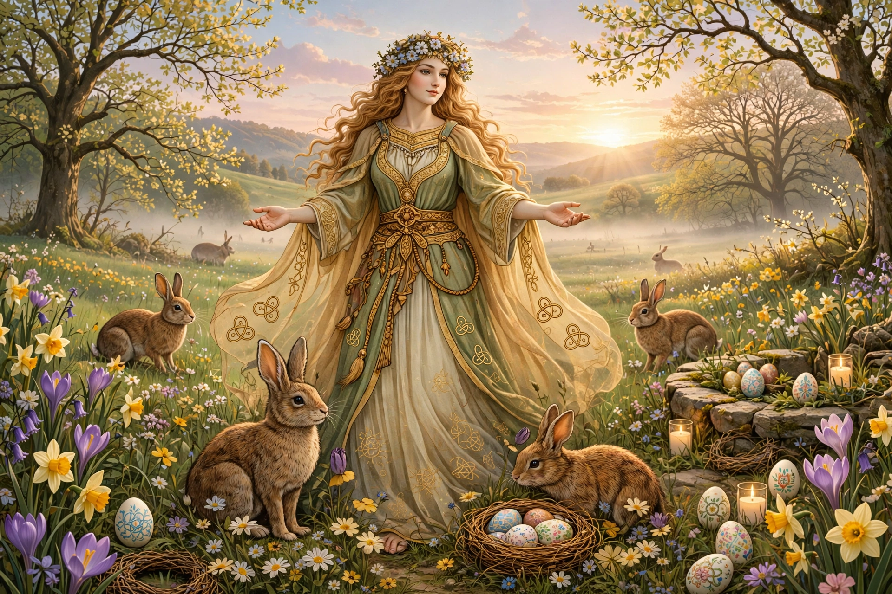

Ostara is the modern Neopagan festival of the spring equinox, named after the Germanic goddess Ēostre (Old High German Ostara), attested by Bede, who wrote that the Anglo-Saxon month Ēosturmōnaþ was named for her feasts — the origin of the word Easter.
Jacob Grimm reconstructed a continental goddess Ostara. Evidence is thin — a single mention by Bede and Matronae Austriahenae inscriptions — and scholarly debate continues over her historicity and any link to hares and eggs.
As one of the eight sabbats of the Wiccan Wheel of the Year, Ostara celebrates balance, renewal, eggs, seeds, and hares. Heathen groups observe related spring feasts such as Sigrblót and Summer Finding.